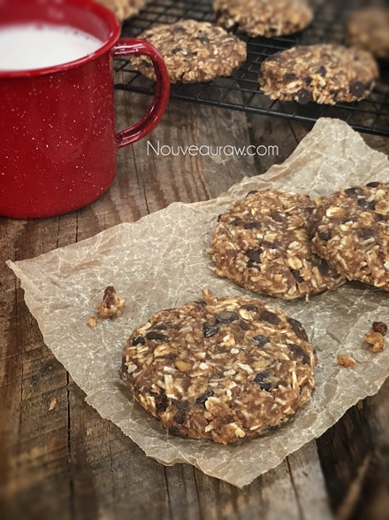

Chocolate Apple Raisin Cookies
~ raw, vegan, gluten-free ~
The Chocolate Apple Raisin Cookie was created merely because I had too much of the mince pie filling leftover. With that in hand, I simply walked into the pantry and started grabbing some ingredients, hoping to create something yummy. I love creating recipes like this. They are pure spontaneous inspirations!
What I didn’t expect was the fact that they would turn out so delicious. I mean, I should have had a good idea because each ingredient selected is amazing on its own… but together they created a chewy, chocolaty cookie, oaty cookie, with wonderful pockets of apple.
I want to focus on oats for just a quick moment. You will notice in the ingredient list that it calls for oats that have been soaked and dehydrated before using them in this recipe. This is an optional step but one that I recommend. When you click on the link below, it will explain why and how to go about this process.
But for quick reference, the purpose behind this is to reduce the phytic acid which is an enzyme inhibitor. Basically, meaning that it can block some absorption of nutrients and for some, it makes it harder to digest. You can decide if this is of importance to you.
P.S. I have included a baking option for those of you who don’t own a dehydrator. You are still light years ahead of purchasing commercially processed cookies. So I am proud of you for being here. I do recommend in time that you invest in one as it will open up a whole new culinary world to you. :) I highly recommend the 9 tray Excalibur dehydrator. I hope you enjoy this recipe. Many blessings, amie sue
I first shared this recipe on Dec. 16th, 2010. Wow, where has the time gone?! Today, I made these for some friends, so I decided to upgrade the photo and clean up my recipe writing skills. I have gotten so much better over the years. :)
Yield 24 (1/4 cup) cookies
Preparation:
- In a large mixing bowl, combine the oats, chocolate chips, coconut flakes, almond flour, salt, and cinnamon. Mix to ensure that all the flavors are well mixed.
- Add the mince pie filling and almond extract. Mix well with your hands. Time to get in touch with your food.
- If the mixture seems too dry, add more minced pie filling.
- Using a 1/4 cup cookies scoop, scoop out the batter onto non-stick sheets. Flatten cookies and transfer to the mesh sheet that comes with the dehydrator
- Dehydrate at 145 degrees (F) for 1 hour, then reduce to 115 degrees (F) for 6-8 hours.
- Allow cooling before storing in an airtight container. On the counter, they should keep 1 week, 2 weeks in the fridge, and even longer in the freezer.
- I like to wrap each cookie in plastic wrap and store it in the fridge.
Baking option:
- Preheat the oven to 350 degrees (F).
- Line a baking sheet with parchment paper and place the cookies at least 1” apart. These cookies won’t flatten while they cook, you will need to help them by slightly flattening them with your fingers.
- Bake for about 15 minutes. Often times ovens run at different temperatures regardless of what the dial says so please check in on the cookies about every 5 minutes for the first batch. Document the time it takes for the next tray or batch.
The Institute of Culinary Ingredients™
- Dates are an amazing ingredient for raw food recipes, click (here) to read why.
- What is Himalayan pink salt and does it really matter? Click (here) to read more about it.
- Are oats gluten-free? Yes, read more about that (here).
- Are oats raw? Yes, they can be found. Click (here) to learn more.
- Do I need to soak and dehydrate oats? Not required but recommended. Click (here) to see why.
Culinary Explanations:
- Why do I start the dehydrator at 145 degrees (F)? Click (here) to learn the reason behind this.
- When working with fresh ingredients it is important, to taste test as you build a recipe. Learn why (here).
- Don’t own a dehydrator? Learn how to use your oven (here). I do however truly believe that it is a worthwhile investment. Click (here) to learn what I use.

© AmieSue.com